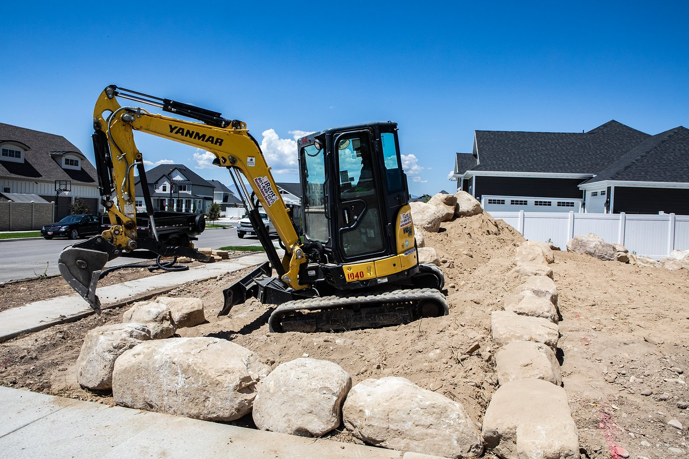

What Factors Should I Consider When Planning A Landscaping Project?

When planning a landscaping project, consider factors such as your budget, desired aesthetic, maintenance requirements, local climate, soil type, and the existing features of your property. Planning a landscaping project involves careful consideration of various factors to ensure the success of your outdoor space transformation. At Ironhills Landscaping, we understand the importance of thoughtful planning and execution to bring your vision to life.
Key Takeaways:
Budget: Determine your budget early on to guide decision-making throughout the project. Allocate funds for both design and implementation, considering potential unexpected costs.
Climate and Environment: Assess the climate and environmental conditions of your location to choose suitable plants, materials, and features that thrive in your area.
Functionality: Identify how you intend to use your outdoor space, whether it's for entertaining, relaxation, or recreation, to design functional layouts and select appropriate features.
Maintenance: Consider the level of maintenance required for different elements of your landscape to ensure it remains beautiful and manageable over time.
Aesthetic Vision: Define your aesthetic preferences and style preferences to create a cohesive and visually appealing landscape design that reflects your personality.
Choosing the Right Plants and Materials
Selecting the right plants and materials is essential for creating a sustainable and visually appealing landscape. Consider factors such as local climate, soil conditions, and maintenance requirements when choosing plants, ensuring they thrive in your environment. Likewise, opt for durable and high-quality materials for features such as retaining walls, outdoor kitchens, and hardscapes to ensure longevity and functionality.
Maximizing Outdoor Space
Maximizing outdoor space involves strategic planning and design to make the most of your available area. Whether you have a small backyard or extensive grounds, thoughtful layout design and creative solutions can optimize usability and enhance the overall appeal of your outdoor space. From multi-functional features to space-saving techniques, exploring innovative design strategies can transform even limited spaces into inviting outdoor retreats.
Creating Sustainable Landscapes
Sustainable landscaping practices not only benefit the environment but also contribute to the long-term health and beauty of your outdoor space. Incorporating elements such as native plants, rainwater harvesting systems, and eco-friendly materials can reduce water consumption, minimize chemical usage, and support local biodiversity. By embracing sustainable principles in your landscaping project, you can enjoy a beautiful and environmentally responsible outdoor environment for years to come.
Importance of Professional Design Services
Professional design services play a pivotal role in elevating the success of your landscaping project. When you collaborate with experienced designers, you gain access to a wealth of expertise, creativity, and attention to detail that can transform your outdoor space into a breathtaking oasis. Here's why investing in professional design services is essential for achieving outstanding results:
Expertise
Professional designers possess in-depth knowledge of landscaping principles, plant selection, hardscape construction, and environmental considerations. Their expertise allows them to assess your space comprehensively and recommend the most suitable design solutions tailored to your specific needs and preferences.
Creativity
Designing a captivating outdoor space requires a blend of artistic vision and practicality. Professional designers excel in marrying aesthetics with functionality, creating innovative and visually stunning landscapes that enhance the beauty and usability of your property. Their creative insights can breathe life into your ideas, transforming them into reality with finesse and style.
Attention to Detail
Every element of your landscape contributes to its overall appeal and functionality. Professional designers meticulously consider every detail, from plant placement and color schemes to lighting and materials, ensuring a harmonious and cohesive design that delights the senses and enhances the ambiance of your outdoor environment.
Comprehensive Planning
Designing a landscape involves more than just planting flowers or installing features. Professional designers conduct thorough site analysis, develop detailed plans, and coordinate various aspects of the project to ensure seamless execution from start to finish. Their comprehensive approach minimizes errors, maximizes efficiency, and ultimately leads to a successful outcome.
Streamlined Process
Entrusting your project to skilled professionals like Ironhills Landscaping streamlines the entire process, saving you time, effort, and potential headaches. From initial consultation to final installation, professional designers guide you through each step, providing expert advice, resolving challenges, and keeping the project on track to achieve your goals.
Professional design services are invaluable assets for any landscaping project. By leveraging the expertise, creativity, and attention to detail of experienced designers, you can elevate the beauty, functionality, and enjoyment of your outdoor space with confidence and peace of mind. Whether you're embarking on a small garden makeover or a large-scale landscape renovation, investing in professional design services is a decision you won't regret.
FAQs:
How long does a landscaping project typically take?
The duration of a landscaping project varies depending on factors such as the scope of work, weather conditions, and availability of materials. While some projects can be completed in a matter of weeks, larger or more complex undertakings may take several months to finish.
Do I need permits for my landscaping project?
Permit requirements vary depending on local regulations and the scope of your project. It's essential to check with your municipality or homeowners' association to determine whether permits are needed for activities such as excavation, construction, or installation of certain features.
How can I maintain my landscape after the project is complete?
Regular maintenance is crucial for preserving the beauty and functionality of your landscape. Tasks such as watering, fertilizing, pruning, and weed control should be performed according to the specific needs of your plants and features. Consider hiring professional maintenance services for ongoing care and upkeep.
Can I make changes to my landscaping design during the project?
While it's possible to make minor adjustments to your landscaping design during the project, significant changes may impact the timeline and budget. Clear communication with your designer and contractor is key to addressing any concerns or revisions promptly and effectively.
What are some cost-saving tips for landscaping projects?
To maximize your landscaping budget, consider options such as phased implementation, prioritizing essential features, and exploring cost-effective materials and plants. Additionally, DIY tasks such as planting and basic maintenance can help reduce labor costs while still achieving desired results.
Crafting Your Outdoor Oasis: Essential Factors for Landscaping Success
Transforming your outdoor space into a stunning oasis requires careful consideration of various factors, from budget and functionality to aesthetic vision and environmental sustainability. At Ironhills Landscaping, we're dedicated to guiding you through every step of the planning and implementation process, ensuring that your landscape reflects your personality and exceeds your expectations. Let's collaborate to bring your outdoor dreams to life and create a backyard paradise that you'll cherish for years to come.
Elevate Your Outdoor Experience with Ironhills Landscaping
Ready to embark on your landscaping journey? Contact Ironhills Landscaping today to schedule a consultation and start planning your outdoor transformation. From design inspiration to expert installation, let our team of professionals bring your vision to life and turn your backyard into a captivating retreat. Don't wait any longer – let's make your outdoor dreams a reality!
Recent Posts


If you live in Lehi, there's a good chance your yard isn't perfectly flat. Newer neighborhoods near Traverse Mountain, homes along the foothills, and lots that step down toward the street all share th